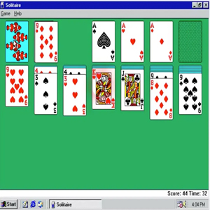

The only toy I am still using after so many years.
even when it produced annoying and strange sounds when trying to connect to the internet. Even sometimes you could stay 24 trying to connect to the internet. However, when the internet was connected it was usually super slow and tended to freeze the screen.
When I came into contact with social networks like messenger or yahoo, which were the fashion at that time. I was surprised at how many people were excited to talk to someone they didn't even know in person. But somehow that fashion managed to catch me in that vice.

Finally, the best memory I have in my beginnings with the internet was the day that real games like Warcraft III or Age of empire appeared. Because there really came a time where I was rotten from just finding a solitary card game and a pinball game.